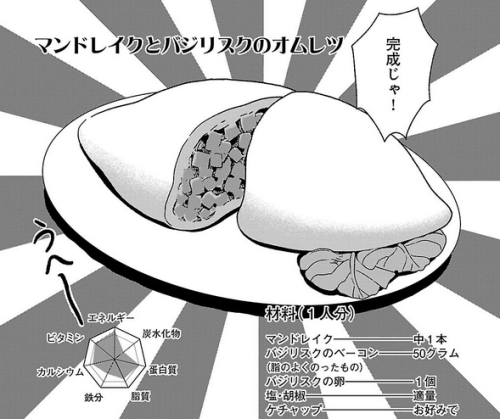

Mandrake and Basilisk Omelet

Delicious omelet made with Basilisk Egg and Mandrake
Recipe Description
A dish created by Senshi consisting of a fluffy Basilisk egg omelet filled with minced Basilisk bacon and
mandrake.f the mandrake used was killed with its 'head' still attached, it will be less bitter and more mellow.
Ingredients
- 1 Mandrake
- 50 grams of Basilisk bacon
- Basilisk egg
- Salt and pepper to taste
- Ketchup to taste
Steps
- Cut the Mandrake and the Basilik Bacon
- Stirr the Basilisk egg
- Get evrything in a frying pan and cook it
- Add salt, pepper and ketchup to taste
- Enjoy!